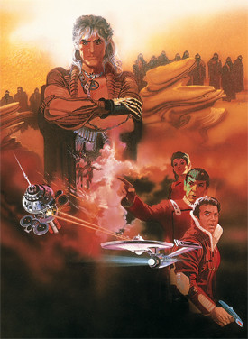

Nicholas Meyer
1982
113 minutes
TITLE: Star Trek 2: The Wrath of Khan TEXT PLACEHOLDER 053
This is a Star Trek film. You've watched surprisingly few of the films or TV shows for someone who went to engineering school. You've had several Trekkie friends over the years, but never seen much of it yourself. It was something you always regarded as a bit of a harmless but amusing perversion, like having a foot fetish or something. Strange and laughable, but ultimately not your thing. You remember seeing the one with the whales and the punk guy with a boombox in the theater (which your father dragged you to) and you had at least some cultural awareness of the basics through secondhand sources such as Mad Magazine, but you never made time to watch the originals. You were a geek, but not that much of a geek. It was definitely something you worried about being bullied for liking too enthusiastically, which was a pretty realistic concern in some of the spaces you ran in.
Still it stayed on your radar, even if you weren't willing to put the time in to follow it directly. Other fandoms beckoned. You got hooked on X-Files and Xena and Twin Peaks. You were also well familiar with all the Star Wars nonsense, back in the pre-prequel days when only the three films existed along with a handful of novels and novelizations and the notorious Christmas Special.
In the early days of the internet, you became aware of weird perverts writing horny fanfiction about gay relationships between the principal characters, which made you even more self-conscious about showing any kind of unnatural enthusiasm for the show.
Upon talking with superfans of the show as an even-more-adult adult, you realize exactly how much of a formative experience this show was for helping to make people you enjoy into the kind of people you enjoy. Many of their friends credit the show as forming a key part into the development of their morality and their political opinions. As with any other religion, you have to give some credit to anything that turns a thoughtful person into a thoughtful person with a proper sense of right and wrong. Whether this comes from hearing the Sermon on the Mount or pondering the ethical implications of killing Tuvix to bring back Tuvok and Neelix, the result is the same.
Time to choose something different: